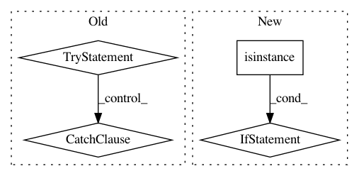

4b8716fd4bd6f462a9db9eee958f2508576ec019,gluoncv/utils/metrics/coco_detection.py,COCODetectionMetric,__init__,#COCODetectionMetric#Any#Any#Any#Any#Any#,32
Before Change
else:
t = ""
self._filename = osp.abspath(osp.expanduser(save_prefix) + t + ".json")
try:
f = open(self._filename, "w")
except IOError as e:
raise RuntimeError("Unable to open json file to dump. What(): {}".format(str(e)))
else:
f.close()
def __del__(self):
if self._cleanup:
try:
os.remove(self._filename)
After Change
Use coco to get real scores.
if not self._current_id == len(self._img_ids):
warnings.warn(
"Recorded {} out of {} validation images, incompelete results".format(
self._current_id, len(self._img_ids)))
import json
try:
with open(self._filename, "w") as f:
In pattern: SUPERPATTERN
Frequency: 4
Non-data size: 4
Instances
Project Name: dmlc/gluon-cv
Commit Name: 4b8716fd4bd6f462a9db9eee958f2508576ec019
Time: 2018-06-15
Author: cheungchih@gmail.com
File Name: gluoncv/utils/metrics/coco_detection.py
Class Name: COCODetectionMetric
Method Name: __init__
Project Name: deepmipt/DeepPavlov
Commit Name: f528c38e26d59b231dd94b87d6603ca243fee766
Time: 2018-02-28
Author: yoptar@gmail.com
File Name: deeppavlov/core/commands/train.py
Class Name:
Method Name: train_model_from_config
Project Name: ray-project/ray
Commit Name: d4a5d09dab446fd9c962c80c87bc7a29f3d8b5cd
Time: 2020-07-10
Author: simon.mo@hey.com
File Name: python/ray/serve/http_proxy.py
Class Name: HTTPProxy
Method Name: __call__
Project Name: keras-team/keras
Commit Name: 5dd8c5c10ccc286a67ba4846a81701207b606e0d
Time: 2016-10-12
Author: francois.chollet@gmail.com
File Name: keras/layers/convolutional.py
Class Name: ZeroPadding2D
Method Name: __init__